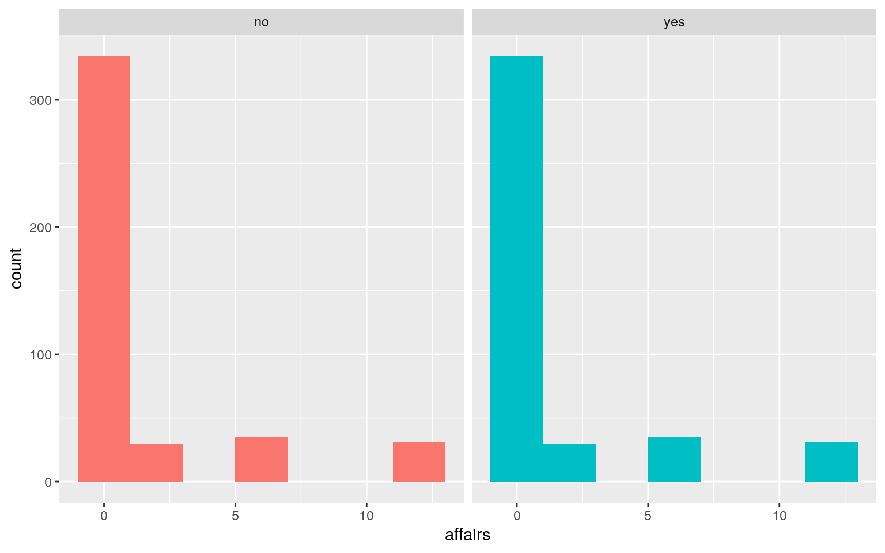
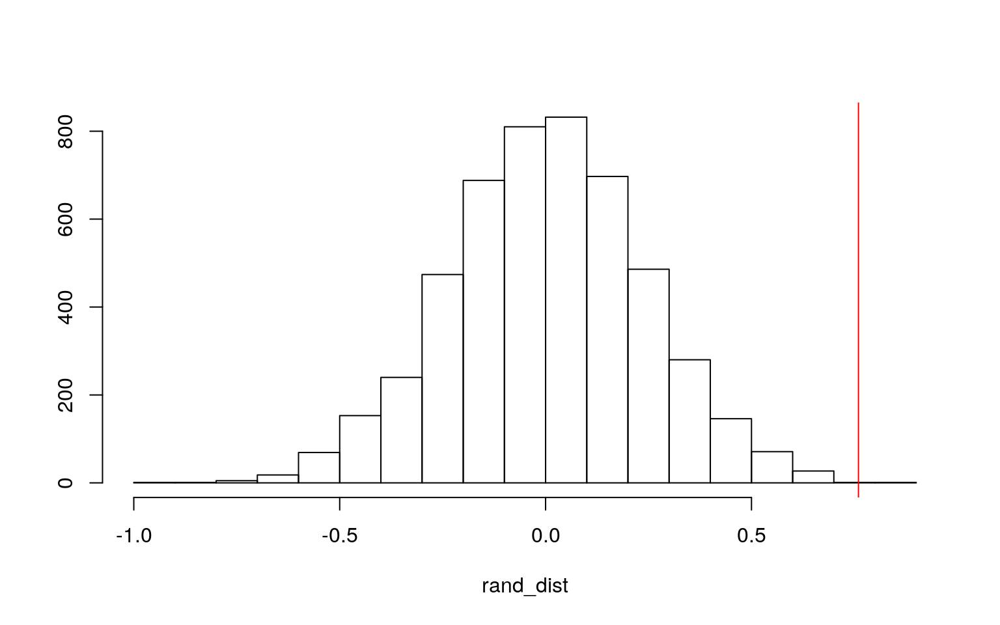
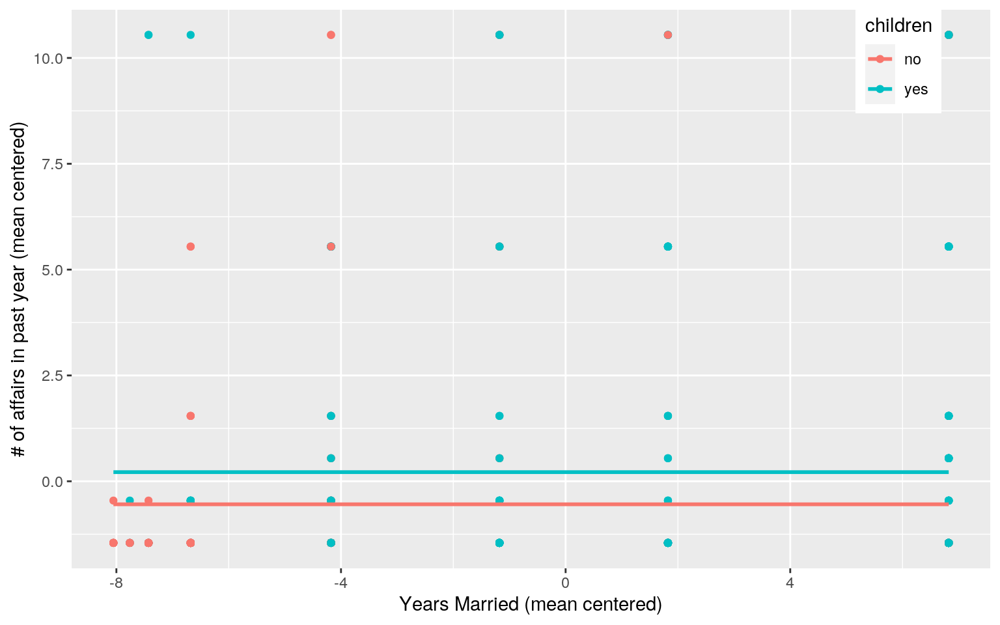
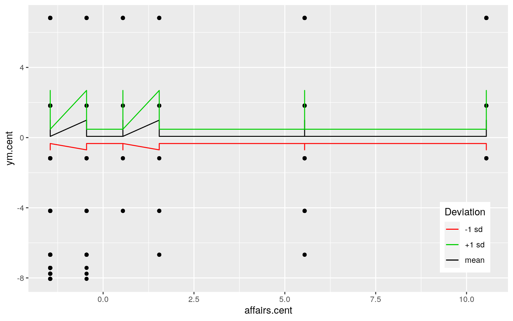
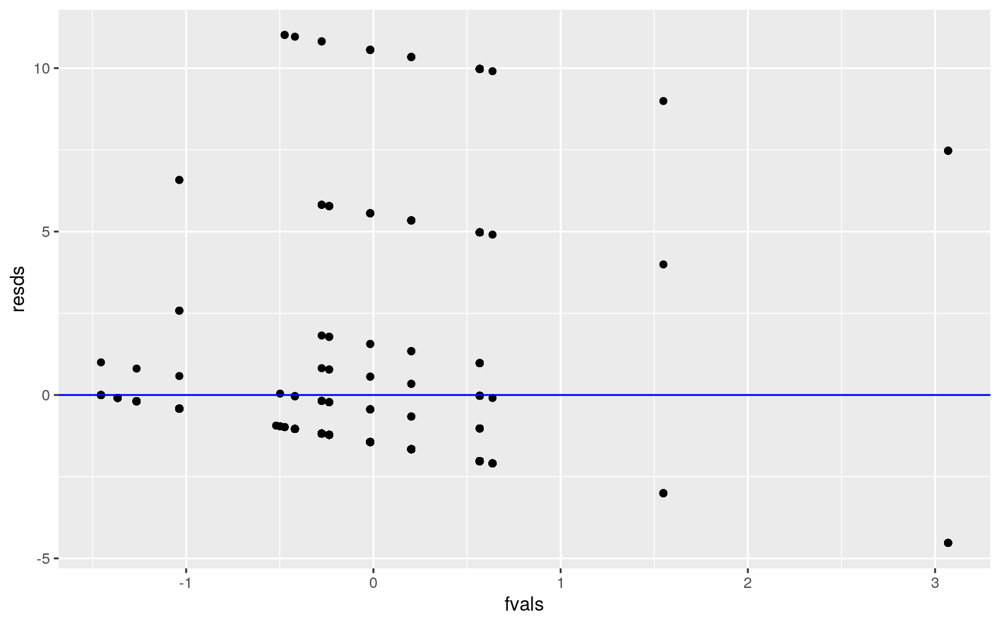
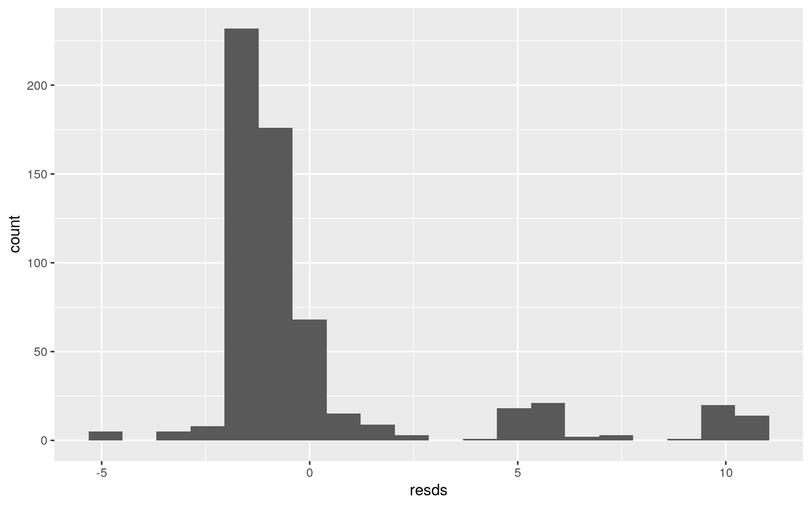
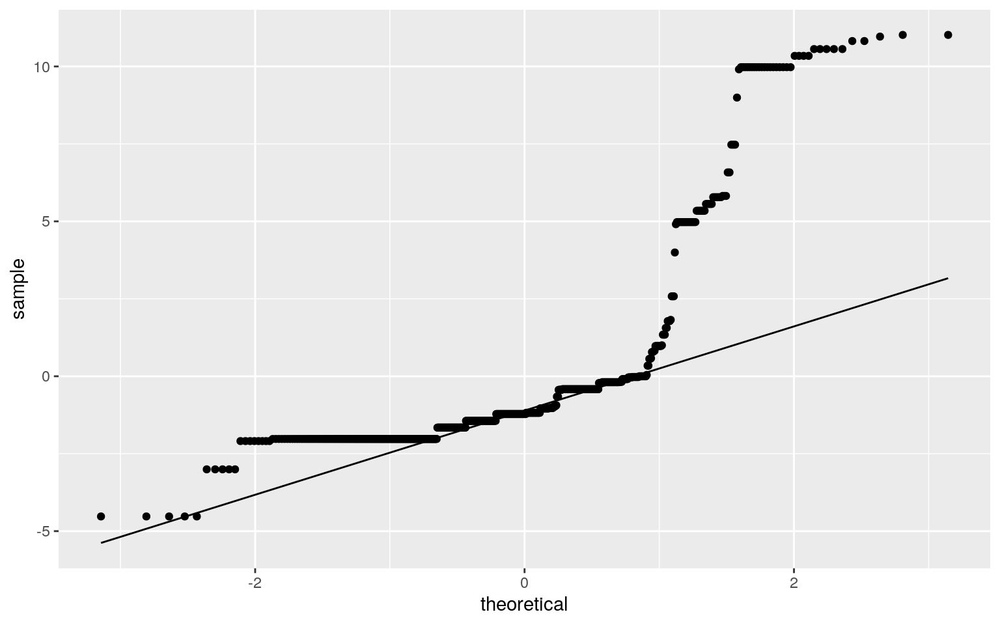
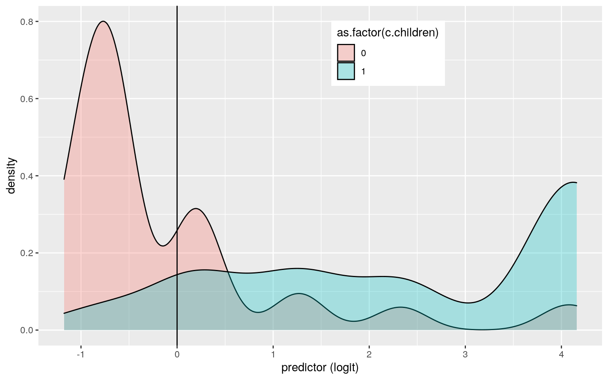
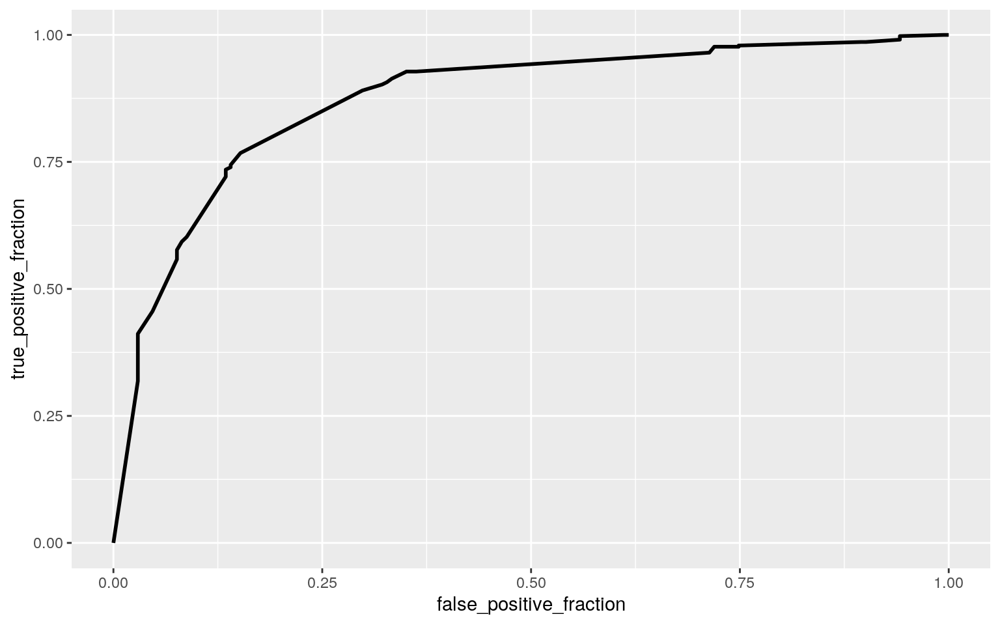

For project 2, I have selected a dataset from the R library that includes responses from a survey on extramarital affairs conducted by Psychology Today in 1969. The dataset has variables like ‘affairs’ which tells how many affairs each person has had in the last year. ‘gender’, ‘age’, and ‘yearsmarried’ are all self-explanatory. ‘education’ tells the number of years of education completed by the participant. Last, ‘rating’ is a self-rating of the participant’s current marriage with ‘1’ meaning “very unhappy” and ‘5’ meaning “very happy.” Each variable has exactly 601 observations.
affairs <- read.csv("Affairs.csv") %>% select(-X)
man <- manova(cbind(affairs, yearsmarried, rating, education)~gender, data = affairs)
summary(man)## Df Pillai approx F num Df den Df Pr(>F)
## gender 1 0.16065 28.517 4 596 < 2.2e-16 ***
## Residuals 599
## ---
## Signif. codes: 0 '***' 0.001 '**' 0.01 '*' 0.05 '.' 0.1
' ' 1summary.aov(man)## Response affairs :
## Df Sum Sq Mean Sq F value Pr(>F)
## gender 1 0.9 0.8993 0.0825 0.774
## Residuals 599 6528.2 10.8985
##
## Response yearsmarried :
## Df Sum Sq Mean Sq F value Pr(>F)
## gender 1 17.1 17.078 0.5498 0.4587
## Residuals 599 18606.6 31.063
##
## Response rating :
## Df Sum Sq Mean Sq F value Pr(>F)
## gender 1 0.04 0.04133 0.0339 0.854
## Residuals 599 730.16 1.21897
##
## Response education :
## Df Sum Sq Mean Sq F value Pr(>F)
## gender 1 547.25 547.25 112.41 < 2.2e-16 ***
## Residuals 599 2916.12 4.87
## ---
## Signif. codes: 0 '***' 0.001 '**' 0.01 '*' 0.05 '.' 0.1
' ' 1pairwise.t.test(affairs$education, affairs$gender, p.adj="none")##
## Pairwise comparisons using t tests with pooled SD
##
## data: affairs$education and affairs$gender
##
## female
## male <2e-16
##
## P value adjustment method: none1-0.95^4## [1] 0.18549380.05/4## [1] 0.0125I ran a MANOVA test to determine if ‘affairs’, ‘yearsmarried’, ‘rating’, or ‘education’ vary by ‘gender’. This yielded a significant result, but when I ran univariate ANOVAs, only ‘education’ significantly varied across ‘gender’. Therefore, I ran a post-hoc t-test on ‘education’ which also showed a significant difference of ‘education’ across ‘gender’. I performed a total of 4 univariate ANOVAs (the t-test was essentially a duplicate of an ANOVA), so there is an 18.55% chance that there is at least one type 1 error in my results. The bonferroni corrected p-value is 0.0125, so my previously discussed results are still significant after this adjustment. The data was collected through a survey, so they got data only from participants who were willing to respond. This means the data cannot be perfectly random and doesn’t entirely meet that assumption. The independent variable is categorical and the dependent variable is a continuous numeric variable, so the data does meet this assumption. Last, there are likely no linear relationships between the dependent variables.
ychildren <- affairs %>% filter(children %in% c("yes")) %>% select(affairs)
ychildren <- as.vector(t(ychildren))
nchildren <- affairs %>% filter(children %in% c("no")) %>% select(affairs)
nchildren <- as.vector(t(ychildren))
affairs %>% group_by(children) %>%
summarize(means = mean(affairs)) %>% summarize(`mean_diff:` = diff(means))## # A tibble: 1 x 1
## `mean_diff:`
## <dbl>
## 1 0.760chil <- data.frame(children=c(rep("yes", 430), rep("no", 430)), affairs=c(ychildren, nchildren))
head(chil)## children affairs
## 1 yes 0
## 2 yes 0
## 3 yes 0
## 4 yes 0
## 5 yes 0
## 6 yes 0ggplot(chil,aes(affairs,fill=children)) + geom_histogram(bins = 7) + facet_wrap(~children, ncol=2) + theme(legend.position="none")
head(perm1 <- data.frame(children = chil$children, affairs = sample(chil$affairs)))## children affairs
## 1 yes 3
## 2 yes 0
## 3 yes 0
## 4 yes 0
## 5 yes 0
## 6 yes 0perm1 %>% group_by(children) %>%
summarize(means = mean(affairs)) %>% summarize(`mean_diff:`=diff(means))## # A tibble: 1 x 1
## `mean_diff:`
## <dbl>
## 1 -0.223rand_dist <- vector()
for(i in 1:5000){
new <- data.frame(affairs = sample(chil$affairs), children = chil$children)
rand_dist[i] <- mean(new[new$children == "no",]$affairs) -
mean(new[new$children == "yes",]$affairs)}
{hist(rand_dist, main="", ylab=""); abline(v = 0.7598123, col="red")}
mean(rand_dist>0.7598123)*2## [1] 4e-04I performed a randomization test between children (yes or no) and number of affairs in the past year. The null and alternate hypotheses are:
Ho: mean number of affairs is the same for people with and without children.
Ha: mean number of affairs is different for people with and without children.
The mean difference between the groups was calculated to be 0.7598123. The data was then randomized, and a histogram was created showing the results with a red line placed at 0.7598123. The red line appears near the edge of the graph because there are very few randomized permutations with mean differences more extreme than the actual mean difference. A t-test was performed to confirm this which yielded a p-value of 0.0016. Therefore, we can reject Ho and say that there is a difference in mean number of affairs between people with and without children.
affairs$affairs.cent <- affairs$affairs - mean(affairs$affairs)
affairs$ym.cent <- affairs$yearsmarried - mean(affairs$yearsmarried)
fit <- lm(affairs.cent~ym.cent*children, data = affairs)
summary(fit)##
## Call:
## lm(formula = affairs.cent ~ ym.cent * children, data =
affairs)
##
## Residuals:
## Min 1Q Median 3Q Max
## -4.5256 -2.0239 -1.2196 -0.1911 11.0180
##
## Coefficients:
## Estimate Std. Error t value Pr(>|t|)
## (Intercept) 0.99453 0.43194 2.302 0.02165 *
## ym.cent 0.30417 0.07013 4.337 1.69e-05 ***
## childrenyes -0.92538 0.46346 -1.997 0.04632 *
## ym.cent:childrenyes -0.23106 0.07693 -3.003 0.00278 **
## ---
## Signif. codes: 0 '***' 0.001 '**' 0.01 '*' 0.05 '.' 0.1
' ' 1
##
## Residual standard error: 3.225 on 597 degrees of freedom
## Multiple R-squared: 0.04929, Adjusted R-squared: 0.04451
## F-statistic: 10.32 on 3 and 597 DF, p-value: 1.252e-06t.test(data = affairs, affairs.cent~children, var.eq = T)##
## Two Sample t-test
##
## data: affairs.cent by children
## t = -2.5595, df = 599, p-value = 0.01073
## alternative hypothesis: true difference in means is not
equal to 0
## 95 percent confidence interval:
## -1.342831 -0.176794
## sample estimates:
## mean in group no mean in group yes
## -0.5436261 0.2161862ggplot(affairs, aes(x = ym.cent, y = affairs.cent, group = children)) +
geom_point(aes(color = children)) + geom_smooth(method = "lm", formula =
y~1, se=F, fullrange = T, aes(color=children)) + theme(legend.position = c(.9,.91)) + xlab("Years Married (mean centered)") + ylab("# of affairs in past year (mean centered)")
For my linear regression, I attempted to predict the number of affairs (in the past year) based on the number of years married and whether or not the participant has children as well as their interaction. The coefficients show that the number of yearly affairs increases by 0.304 for every year that participant has been married. They also show that participants with children have 0.925 fewer affairs per year than those without children. Last, the slope for years married on the number of yearly affairs is 0.231 lower for participants with children compared to those without. All of the coefficients are significant.
n1 <- affairs
n1$ym.cent <- mean(affairs$ym.cent)
n1$mean <- predict(fit, n1)
n1$ym.cent<-mean(affairs$ym.cent) + sd(affairs$ym.cent)
n1$plus_sd <- predict(fit, n1)
n1$ym.cent <- mean(affairs$ym.cent) - sd(affairs$ym.cent)
n1$minus_sd <- predict(fit, n1)
colors <- c("red", "orange", "yellow")
names(colors) <- c("-1 sd", "mean", "+1 sd")
colors = as.factor(colors)
ggplot(affairs, aes(affairs.cent, ym.cent), group = colors) + geom_point() + geom_line(data = n1, aes(y = mean,color = "mean")) + geom_line(data = n1, aes(y = plus_sd, color = "+1 sd")) + geom_line(data = n1, aes(y = minus_sd, color = "-1 sd")) + scale_color_manual(values = colors) + labs(color = "Deviation") + theme(legend.position = c(.91,.19)) When I plotted the interaction, I got a strange result. The lines are very jagged but for the most part parallel. Therefore, the interactions between my variables are likely minimal.
resds <- lm(affairs.cent~ym.cent*children, data = affairs)$residuals
fittd <- lm(affairs.cent~ym.cent*children, data = affairs)$fitted.values
resds <- fit$residuals
fvals <- fit$fitted.values
ggplot() + geom_point(aes(fvals,resds)) + geom_hline(yintercept=0, color='blue')
This plot is to check for homoskedasticity and linearity. The plot is nonlinear and exhibits heteroskedasticity.
ggplot() + geom_histogram(aes(resds), bins=20)
ggplot() + geom_qq(aes(sample = resds)) + geom_qq_line(aes(sample=resds))
ks.test(resds, "pnorm", mean=0, sd(resds))##
## One-sample Kolmogorov-Smirnov test
##
## data: resds
## D = 0.3171, p-value < 2.2e-16
## alternative hypothesis: two-sided*These plots and hypothesis tests show that the data skewed and not normal. the histogram is skewed to the right, the qq-plot shows that most of the points do not follow the line, and the ks test yielded a test statistic of 0.317 and a p-value of 2.2e-16. All of these strongly confirm that the data is not normal.
fit2 <- lm(affairs.cent~ym.cent*children, data = affairs)
bptest(fit2)##
## studentized Breusch-Pagan test
##
## data: fit2
## BP = 30.379, df = 3, p-value = 1.149e-06summary(fit2)$coef[,1:2]## Estimate Std. Error
## (Intercept) 0.9945270 0.43194281
## ym.cent 0.3041737 0.07013134
## childrenyes -0.9253758 0.46346355
## ym.cent:childrenyes -0.2310573 0.07693081coeftest(fit2, vcov = vcovHC(fit2))[,1:2]## Estimate Std. Error
## (Intercept) 0.9945270 0.7104659
## ym.cent 0.3041737 0.1104032
## childrenyes -0.9253758 0.7294674
## ym.cent:childrenyes -0.2310573 0.1153356The Breuch-Pagan test results show that the p-value is 1.1e-06. Therefore, we can reject Ho and conclude that the data is heteroskedastic. Robust standard error was conducted, and the standard error for the intercept, years married, people with children, and the interaction all increased.
(sum((affairs$affairs.cent - mean(affairs$affairs.cent))^2) - sum(fit$residuals^2))/sum((affairs$affairs.cent - mean(affairs$affairs.cent))^2)## [1] 0.04928867My model explains 4.929% of the variation in the outcome.
set.seed(100)
boots_dat <- sample_frac(affairs, replace=T)
samp_distn <- replicate(5000, {
boots_dat <- sample_frac(affairs, replace=T)
fit3 <- lm(affairs.cent ~ ym.cent*children, data = boots_dat)
coef(fit3)
})
samp_distn %>% t %>% as.data.frame %>% summarize_all(sd)## (Intercept) ym.cent childrenyes ym.cent:childrenyes
## 1 0.6752489 0.1042843 0.6952752 0.1100886The bootstrapped standard errors are 0.6752 for the intercept, 0.1043 for years married, 0.6953 for people with children, and 0.1101 for the interaction. These standard errors are all slightly lower than the robust standard errors. These numbers are still very similar, so it is likely that the bootstrapped standard errors will also have a p-value less than 0.05. These values are less different than the original standard errors computed for this model. The original standard errors were 0.4319 for the intercept, 0.0701 for the year, 0.4635 for people with children, and 0.0769 for the interaction.
affairs <- affairs %>% mutate(c.children = ifelse(children == "no", 0, 1))
fit4 <- glm(c.children ~ yearsmarried+affairs, data = affairs, family = "binomial")
coeftest(fit4)##
## z test of coefficients:
##
## Estimate Std. Error z value Pr(>|z|)
## (Intercept) -1.202593 0.181016 -6.6436 3.062e-11 ***
## yearsmarried 0.357374 0.033135 10.7854 < 2.2e-16 ***
## affairs -0.018475 0.041199 -0.4484 0.6538
## ---
## Signif. codes: 0 '***' 0.001 '**' 0.01 '*' 0.05 '.' 0.1
' ' 1exp(coef(fit4))## (Intercept) yearsmarried affairs
## 0.3004143 1.4295709 0.9816949The coefficient estimates for my regression are -1.203 for the intercept (significant), 0.3574 for years married (significant), and -0.0185 for the number of yearly affairs (not significant). Therefore, we reject the null hypothesis for the intercept and years married. In other words, there is a significant relationship between whether or not you have children and the number of years you have been married.
prb <- predict(fit4, type = "response")
predic <- ifelse(prb > .5,1,0)
table(prediction = predic, truth = affairs$c.children) %>% addmargins()## truth
## prediction 0 1 Sum
## 0 109 31 140
## 1 62 399 461
## Sum 171 430 601(109+399)/601 #accuracy## [1] 0.8452579109/140 #tpr## [1] 0.7785714399/461 #tnr## [1] 0.8655098109/171 #ppv## [1] 0.6374269For my model, accuracy is 0.8453, TPR is 0.7786, TNR is 0.8655, and PPV is 0.6374. This means that the proportion of correctly classified cases is 84.5%, the proportion of people with children correctly classified is 77.9%, the proportion of people without children correctly classified is 86.6%, and the proportion classified with children that actually do is 63.7%. This also means that, given the years married and number of yearly affairs, people will be categorized as having children and not having children about 3/4 of the time.
affairs$logit <- predict(fit4, type = "link")
ggplot(affairs, aes(logit, fill = as.factor(c.children)))+geom_density(alpha=.3)+
theme(legend.position=c(.62,.86))+geom_vline(xintercept=0)+xlab("predictor (logit)")
This data created a density plot that has a considerable amount of overlap between the two groups, meaning that the model is only doing an okay job. Many people who were measured to have or not have children were incorrectly categorized.
ROCplot <- ggplot(affairs) + geom_roc(aes(d = c.children, m = prb), n.cuts=0)
ROCplot
calc_auc(ROCplot)## PANEL group AUC
## 1 1 -1 0.8725554The ROC plot did not generate a right angle, but it came somewhat close. The AUC was 0.873, which is expected based on the graph. Therefore, the model is decently calculating the TPR result. Every person that is measured to have or not have children is often correctly categorized.
class_diag <- function(prbs,truth){
#CONFUSION MATRIX: CALCULATE ACCURACY, TPR, TNR, PPV
tab<-table(factor(prbs>.5,levels=c("FALSE","TRUE")),truth)
acc=sum(diag(tab))/sum(tab)
sens=tab[2,2]/colSums(tab)[2]
spec=tab[1,1]/colSums(tab)[1]
ppv=tab[2,2]/rowSums(tab)[2]
if(is.numeric(truth)==FALSE & is.logical(truth)==FALSE) truth<-as.numeric(truth)-1
#CALCULATE EXACT AUC
ord<-order(prbs, decreasing=TRUE)
prbs <- prbs[ord]; truth <- truth[ord]
TPR=cumsum(truth)/max(1,sum(truth))
FPR=cumsum(!truth)/max(1,sum(!truth))
dup<-c(prbs[-1]>=prbs[-length(prbs)], FALSE)
TPR<-c(0,TPR[!dup],1); FPR<-c(0,FPR[!dup],1)
n <- length(TPR)
auc<- sum(((TPR[-1]+TPR[-n])/2) * (FPR[-1]-FPR[-n]) )
data.frame(acc,sens,spec,ppv,auc)
}
class_diag(prb,affairs$c.children)## acc sens spec ppv auc
## 1 0.8452579 0.927907 0.6374269 0.8655098 0.8725554set.seed(100)
k=10
data<-affairs[sample(nrow(affairs)),]
folds<-cut(seq(1:nrow(affairs)),breaks=k,labels=F)
diags<-NULL
for(i in 1:k){
train<-data[folds!=i,]
test<-data[folds==i,]
truth<-test$c.children
fit5<-glm(c.children~yearsmarried+affairs,data=train,family="binomial")
prbs<-predict(fit5,newdata = test,type="response")
diags<-rbind(diags,class_diag(prbs,truth))
}
summarize_all(diags,mean)## acc sens spec ppv auc
## 1 0.8419126 0.9180986 0.6446083 0.8687119 0.8622182The 10-fold CV gave an output of about 0.85 - 0.90 for accuracy and sensitivity. Specificity was 0.645.
affairs2 <- affairs %>% select(-c(ym.cent, affairs.cent, logit))
head(affairs2)## affairs gender age yearsmarried children religiousness
education occupation rating c.children
## 1 0 male 37 10.00 no 3 18 7 4 0
## 2 0 female 27 4.00 no 4 14 6 4 0
## 3 0 female 32 15.00 yes 1 12 1 4 1
## 4 0 male 57 15.00 yes 5 18 6 5 1
## 5 0 male 22 0.75 no 2 17 6 3 0
## 6 0 female 32 1.50 no 2 17 5 5 0y <- as.matrix(affairs2$c.children)
x <- model.matrix(c.children~., data = affairs2)[,-1]
x <- scale(x)
cv <- cv.glmnet(x, y)
lasso <- glmnet(x, y, family = "binomial", lambda = cv$lambda.1se)
coef(lasso)## 10 x 1 sparse Matrix of class "dgCMatrix"
## s0
## (Intercept) 2.327586
## affairs .
## gendermale .
## age .
## yearsmarried .
## childrenyes 3.898272
## religiousness .
## education .
## occupation .
## rating .class_diag(prb, affairs2$c.children)## acc sens spec ppv auc
## 1 0.8452579 0.927907 0.6374269 0.8655098 0.8725554set.seed(100)
k = 10
data <- affairs2[sample(nrow(affairs2)),]
folds <- cut(seq(1:nrow(affairs2)), breaks = k, labels = F)
diags <- NULL
for(i in 1:k){
train <- data[folds!=i,]
test <- data[folds==i,]
truth <- test$c.children
fit6 <- glm(c.children~., data = train, family = "binomial")
prbs <- predict(fit6, newdata = test, type="response")
diags <- rbind(diags, class_diag(prbs, truth))
}
summarize_all(diags, mean)## acc sens spec ppv auc
## 1 1 1 1 1 1Based on the results, having children is the most predictive variable. My CV results are similar to the logistic regression above.